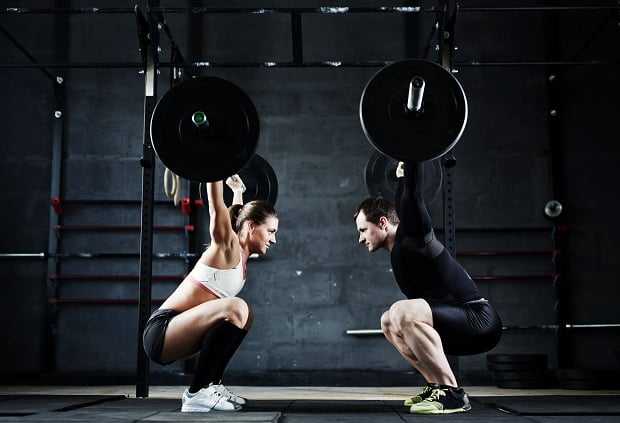
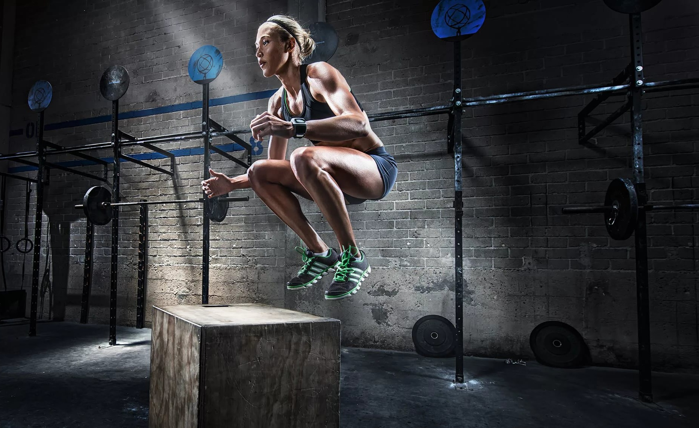
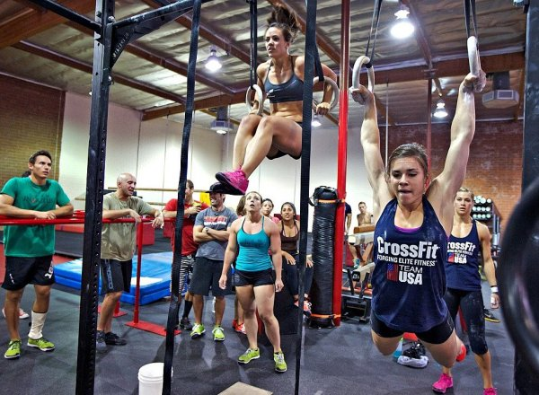

Кроссфит — одно из самых молодых и стремительно развивающихся спортивных направлений в Мире. При этом
нагрузки направлены не только на проработку силовых качеств, но также выносливости и ловкости. Именно
поэтому тренировку по кроссфиту делят на несколько частей: кардио, атлетику и гимнастику.
Еще одна важная особенность кроссфита – все упражнения максимально функциональны и задействуют разные группы
мышц. К ним относятся приседания, рывки, тяги, жимы, подъемы, а для их выполнения зачастую используется
дополнительное оборудование в виде гантелей, штанг и гирь. Также в комплекс входят упражнения с собственным
весом: прыжки, выпады, упражнения на турнике и брусьях, и кардио: бег, прыжки на скакалке, плавание и
упражнения на кардиотренажерах. Но на самом деле CrossFit — это
новый взгляд на спорт
,
здоровый образ жизни и самого себя, свои возможности и стремления.
Польза кроссфита
Основное преимущество кроссфита – всесторонняя физическая подготовка. Но при этом с помощью такой системы
нагрузок можно быстро сбросить лишний вес, ведь всего лишь за одну тренировку ты будешь сжигать около 1000
калорий! Добиться желаемого эффекта можно за довольно короткий промежуток времени, если еще и добавить к
этому правильное питание.
В разные дни тренировок происходит проработка разных качеств. Например, силы и выносливости, ловкости и
силы, ловкости и выносливости. Именно поэтому кроссфит считается идеальным вариантом нагрузки для развития
общей физической подготовки, ведь изначально он был разработан для войск специального назначения, полиции и
военных в США.
Занимаясь кроссфитом ты заметишь, что
твое тело преображается
– мускулатура становится твердой и рельефной,
тело становится более подтянутым, красивым и стройным. При этом ты станешь ловкой, быстрой и выносливой, а
после каждой тренировки будешь гордиться собой.
Как начать тренировки?
Кроссфит дает значительную нагрузку на все тело, поэтому новичкам тренировки кажутся довольно сложными. При
этом многие эксперты считают, что ориентирование не на технику выполнения упражнений, а на скорость и
большой вес приносят спортсменам больше вреда, чем пользы, так как существует высокий риск травм и
сердечно-сосудистых заболеваний. Чтобы начать заниматься кроссфитом, заранее подготовь тело к таким
физическим нагрузкам. Утренней зарядки будет недостаточно, поэтому подключаем специальные упражнения:
отжимания от пола с ног, приседания с гантелями, выпады, скручивания, тяга гантелей. Каждое упражнение
выполняй по 10-15 раз 3-4 подхода без остановок в режиме круговой тренировки. В качестве кардиоупражнения
прыгай на скакалке 2-3 минуты. Следи за своим самочувствием и пульсом!
Существует несколько направлений в CrossFit

Тяжёлая атлетика
Тяжёлая атлетика — королева силовых видов спорта. Здесь нет места полумерам и сомнениям, но есть вызов и
готовность сделать больше, чем вы сами от себя ожидали. Всего 2 снаряда, штанга и гиря; всего 2 основных
упражнения, толчок и рывок, дают каждому атлету неограниченное пространство для развития.

Кроссфит
Основной формат занятий — это круговые тренировки, в рамках которых вы выполняете заданный комплекс
упражнений и стремитесь сделать его за минимальное время. В отличие от других спортивных направлений,
CrossFit развивает не одно физичес

Кроссфит гимнастика
Кроссфит гимнастика – это специализированный класс для начинающих и продвинутых атлетов по гимнастике,
ориентированный на прогрессию в рамках Кроссфит-направления. Сложность упражнения подобрана таким
образом,
что каждый может посещать занятия даже не имея опыта тренировок. Ходьба на руках, выходы на кольцах,
подтягивания – небольшой список упражнений, которые практикуются на регулярной основе.
Знаете ли Вы свой ИМТ?
Индекс массы тела является показателем отношения веса и роста человека. Данный параметр помогает определить
отклонения от нормальной массы тела в ту или иную сторону.
Для того, чтобы узнать свой ИМТ необходимо лишь свой вес в килограммах разделить на квадрат роста в метрах.